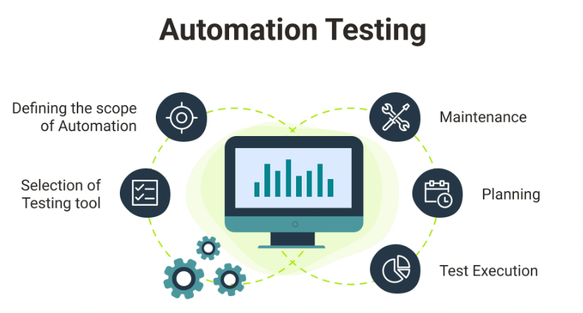
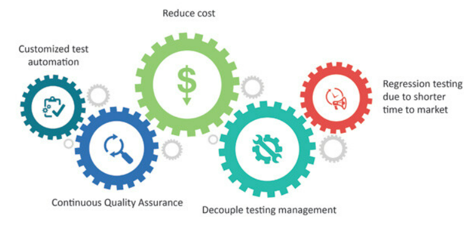

QA-Forum
Improve your Test instinct
QA AUTOMATION
What is automated QA?
QA is a subset of the software development life cycle (SDLC), and QA automation means using automated testing tools to run tests on the software being developed and report on the results. Automation testing handles many of the time-consuming tasks that were previously carried out by manual testers.
How it's helps us?
It helps to reduce the cost of testing by having an automated report in addition to being able to have more control and capacity of cases to run.
Process QA
Through the QA Automation process, the professional in charge guarantees an agile, fast work with the highest quality in the processes, equipment and in the final result, thanks to the fact that automating the checks optimizes the tests, performance and continuous improvements are made.